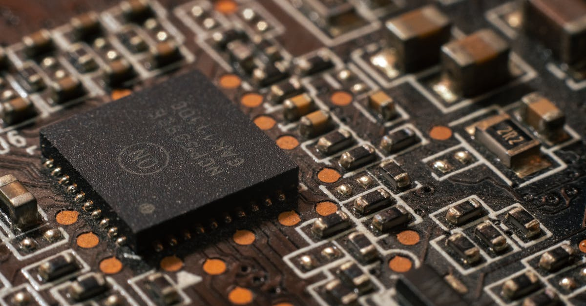

L'Ascension Inexorable de l'IA : Le Calcul au Cœur de la Révolution
L'intelligence artificielle n'est plus une promesse lointaine ; elle est une réalité tangible qui redéfinit chaque facette de notre monde, de la médecine à la finance. Au cœur de cette révolution se trouve une exigence insatiable : la puissance de calcul. C'est dans ce contexte que la plateforme d'inférence cloud DeepInfra vient de clôturer un tour de financement de série B impressionnant de 107 millions de dollars, avec le soutien de poids lourds tels que Nvidia et Samsung. Cette nouvelle, rapportée par Bloomberg Technology, n'est pas qu'une simple transaction financière ; elle est un signal fort de l'orientation stratégique de l'industrie technologique et de ses implications pour des secteurs aussi dynamiques que le trading.
👉 À lire : Arm Holdings : L'IA au cœur d'une enquête en Malaisie
Pourquoi un tel engouement pour l'inférence IA ? Alors que l'entraînement des modèles d'IA, en particulier les grands modèles de langage (LLM), capte souvent l'attention pour sa consommation gargantuesque de ressources, l'inférence – c'est-à-dire l'application de ces modèles entraînés pour générer des prédictions ou des actions – est le véritable goulot d'étranglement pour leur déploiement à grande échelle. Imaginez des millions d'utilisateurs interagissant simultanément avec des chatbots IA, des systèmes de recommandation ou des algorithmes de trading en temps réel. Chaque requête nécessite une inférence rapide et efficace. « Chaque dollar investi dans l'optimisation du calcul IA est un dollar investi dans l'avenir de toutes les industries, y compris les marchés financiers », comme le soulignait récemment Dr. Éloïse Dubois, analyste chez Quantum Insights. Cette levée de fonds pour DeepInfra témoigne d'une reconnaissance croissante de la nécessité d'optimiser cette « dernière étape » cruciale de la chaîne de valeur de l'IA. Pour les acteurs du trading, où la vitesse et la précision sont reines, cette avancée est d'une importance capitale.
👉 À lire : IA et Oscars : Hollywood dit non aux acteurs et scénarios générés par IA

DeepInfra : Débloquer le Potentiel de l'Inférence en Nuage
DeepInfra se positionne comme un acteur clé pour résoudre les défis inhérents à l'inférence IA. Sa plateforme cloud est conçue pour permettre aux entreprises de déployer et de mettre à l'échelle leurs modèles d'IA entraînés de manière plus rapide, plus économique et plus efficace. Jusqu'à présent, le déploiement de modèles d'IA complexes en production était souvent synonyme de coûts élevés, de latence significative et de difficultés à gérer la charge. Ces obstacles freinaient l'adoption généralisée de l'IA dans de nombreux domaines, y compris le trading algorithmique où chaque milliseconde compte.
La solution de DeepInfra repose sur une infrastructure optimisée qui tire parti des architectures matérielles les plus avancées, notamment les GPU de Nvidia, pour exécuter les inférences à des vitesses record. En mutualisant les ressources et en proposant des outils de gestion simplifiés, la plateforme démocratise l'accès à une puissance de calcul IA de pointe, même pour les entreprises ne disposant pas d'équipes d'ingénieurs spécialisées ou de budgets illimités. C'est un peu comme si DeepInfra construisait un réseau autoroutier à très grande vitesse, spécialement conçu pour les modèles d'IA, leur permettant d'atteindre leur destination (les utilisateurs finaux ou les systèmes de décision) avec une efficacité inégalée. L'investissement de Nvidia dans DeepInfra n'est donc pas anodin ; il s'agit d'une démarche stratégique pour s'assurer que ses propres puces, conçues pour l'IA, sont utilisées de la manière la plus optimale possible, prolongeant ainsi leur valeur et leur impact au-delà de la simple vente de matériel. Cette synergie est essentielle pour alimenter la prochaine génération d'applications IA, y compris celles qui analysent et réagissent aux fluctuations des marchés financiers en temps réel.
Nvidia : Architecte de l'Écosystème IA de Demain
L'implication de Nvidia dans la levée de fonds de DeepInfra souligne une fois de plus la stratégie à long terme du géant des puces : ne pas se contenter d'être un simple fournisseur de matériel, mais devenir l'architecte et le catalyseur de l'ensemble de l'écosystème de l'IA. Sous la direction visionnaire de Jensen Huang, Nvidia a su transformer son cœur de métier – les cartes graphiques pour le jeu – en un pilier indispensable pour le calcul haute performance et l'intelligence artificielle. Aujourd'hui, Nvidia est bien plus qu'un fabricant de GPU ; c'est une plateforme complète, offrant des solutions logicielles, des frameworks et un réseau d'investissement stratégique.
Les investissements de Nvidia dans des startups prometteuses comme DeepInfra ne sont pas des coups de poker isolés. Ils s'inscrivent dans une logique globale visant à assurer que l'infrastructure nécessaire pour exploiter pleinement la puissance de ses propres GPU soit en place. En soutenant des entreprises qui optimisent l'utilisation de l'IA en cloud, Nvidia garantit que ses puces sont au cœur des applications les plus innovantes et les plus exigeantes.
« Nvidia est-elle simplement un vendeur de puces, ou l'architecte discret de la nouvelle économie mondiale ? La réponse est de plus en plus évidente : c'est un bâtisseur d'écosystèmes, façonnant le futur de l'IA à travers ses investissements stratégiques et son leadership technologique », affirmait un récent rapport du cabinet TechFrontier.Cette approche permet à Nvidia de renforcer sa position dominante, de créer des barrières à l'entrée pour ses concurrents et d'accélérer l'adoption de l'IA dans tous les secteurs. Pour les marchés financiers, cela signifie une infrastructure de plus en plus robuste et performante, capable de soutenir des systèmes de trading IA de plus en plus sophistiqués.

L'Impact sur le Trading Quantitatif et l'IA Financière : Une Révolution en Temps Réel
Pour les investisseurs et les plateformes comme TradePilot AI, les avancées dans l'optimisation de l'inférence IA, comme celles proposées par DeepInfra et soutenues par Nvidia, représentent une véritable révolution. Le trading algorithmique, les ETF et les indices boursiers sont des domaines où la vitesse d'analyse et d'exécution est un facteur critique de succès. Une inférence IA plus rapide et plus efficace a des répercussions directes sur la performance des stratégies de trading.
- Exécution plus rapide : Des modèles d'IA capables d'analyser des flux de données massifs – nouvelles économiques, sentiment du marché, indicateurs techniques, mouvements de prix – et de générer des signaux de trading en temps quasi réel peuvent exécuter des ordres plus rapidement, profitant d'opportunités éphémères.
- Optimisation des stratégies : L'efficacité de l'inférence permet des cycles de backtesting et d'optimisation de modèles beaucoup plus courts, permettant aux traders d'adapter leurs stratégies aux conditions de marché changeantes avec une agilité sans précédent.
- Réduction de la latence : Dans le trading haute fréquence, chaque milliseconde compte. Une infrastructure d'inférence optimisée réduit la latence entre la détection d'un signal et l'exécution d'une transaction, offrant un avantage concurrentiel significatif.
- Gestion des risques améliorée : L'IA peut évaluer les risques associés à chaque transaction en temps réel, ajustant les positions ou les stratégies pour minimiser les pertes potentielles.
« Dans le monde ultra-rapide du trading, chaque milliseconde compte. Une inférence IA plus rapide signifie des décisions plus rapides, et potentiellement des gains optimisés », explique un expert en trading quantitatif. Imaginez un copilote IA capable d'analyser des téraoctets de données financières en une fraction de seconde, d'identifier des opportunités et d'exécuter des ordres avec une précision chirurgicale. C'est la promesse d'une infrastructure IA robuste qui permet à des plateformes comme TradePilot AI d'offrir un service de trading autonome 24h/24, capable de réagir instantanément aux dynamiques du marché. Les investissements dans des entreprises comme DeepInfra sont les fondations invisibles qui rendent possible cette performance de pointe.
Défis et Perspectives d'Avenir pour l'Infrastructure IA
Malgré les avancées significatives symbolisées par l'investissement dans DeepInfra, le chemin vers une infrastructure IA parfaitement efficiente n'est pas sans embûches. Plusieurs défis majeurs persistent et nécessitent une innovation continue. Le premier est la consommation énergétique : faire fonctionner des modèles d'IA complexes requiert une quantité colossale d'énergie, soulevant des questions écologiques et de coût opérationnel. Ensuite, la scalabilité reste un enjeu crucial ; la demande en puissance de calcul IA croît exponentiellement, et il est difficile de suivre le rythme en termes de matériel et d'infrastructure.
La sécurité des données et des modèles est également une préoccupation croissante. Protéger les informations sensibles traitées par l'IA, ainsi que l'intégrité des modèles eux-mêmes contre les attaques ou les manipulations, est primordial. Enfin, le coût d'accès à cette puissance de calcul reste un frein pour de nombreuses petites et moyennes entreprises. C'est là que des plateformes comme DeepInfra jouent un rôle essentiel en optimisant l'utilisation des ressources et en réduisant les barrières à l'entrée.
Pour l'avenir, nous pouvons anticiper plusieurs tendances : l'IA de périphérie (Edge AI), où une partie de l'inférence se fera directement sur les appareils (smartphones, capteurs) plutôt que dans le cloud, réduisant la latence et la dépendance au réseau. Le développement de matériel spécialisé au-delà des GPU, comme les ASIC ou les puces neuromorphiques, promet également des gains d'efficacité. La démocratisation de l'IA continuera, avec des outils toujours plus accessibles et des infrastructures optimisées qui permettront à un plus grand nombre d'acteurs d'intégrer l'IA dans leurs opérations, y compris dans le trading. Ces innovations sont vitales pour soutenir la croissance exponentielle de l'IA et garantir qu'elle reste un moteur de progrès pour tous les secteurs, y compris la finance.

Conclusion : L'IA, Pilier Indispensable des Marchés Modernes
L'investissement de 107 millions de dollars dans DeepInfra, avec le soutien stratégique de Nvidia et Samsung, n'est pas qu'une simple transaction financière. C'est un jalon significatif dans la course à l'optimisation de l'infrastructure d'intelligence artificielle, un domaine dont la pertinence ne cesse de croître pour l'ensemble de l'économie mondiale. En s'attaquant aux goulots d'étranglement de l'inférence IA, DeepInfra ouvre la voie à des applications plus rapides, plus fiables et plus accessibles, impactant directement des secteurs comme le trading d'actions, d'ETF et d'indices boursiers.
Pour les investisseurs qui cherchent à naviguer les complexités des marchés financiers, un copilote IA performant n'est plus un luxe, mais une nécessité. Les avancées technologiques, rendues possibles par des entreprises comme DeepInfra et soutenues par des géants comme Nvidia, sont les fondations de cette nouvelle ère financière. Elles permettent à des plateformes comme TradePilot AI de transformer des données brutes en décisions éclairées, d'exécuter des stratégies avec une précision inégalée et d'offrir un avantage concurrentiel substantiel.
L'ère où l'IA était une simple assistance est révolue. Aujourd'hui, elle est le moteur, le stratège et le copilote indispensable. Les marchés financiers, avec leur flux constant d'informations et leur besoin incessant de réactivité, sont le terrain de jeu idéal pour cette synergie entre l'innovation technologique et l'expertise financière. L'avenir du trading est indubitablement façonné par l'IA, et chaque avancée dans son infrastructure nous rapproche d'un écosystème financier plus intelligent, plus rapide et plus efficace.